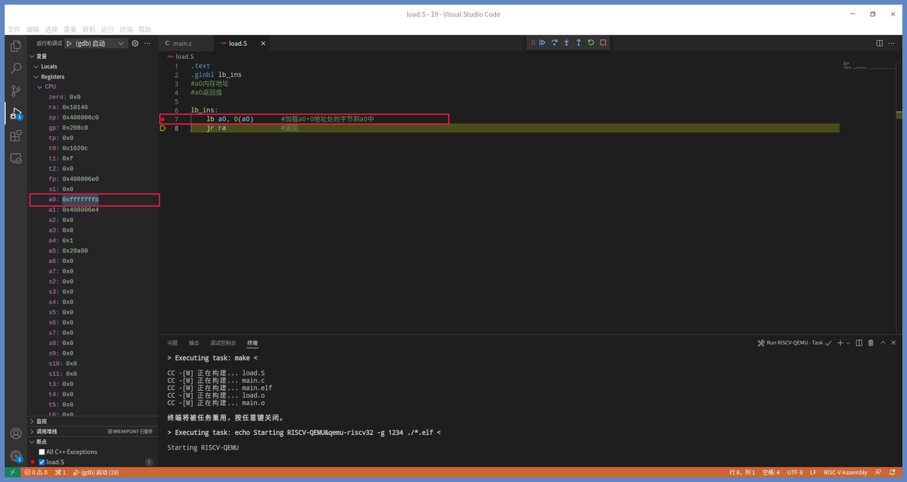
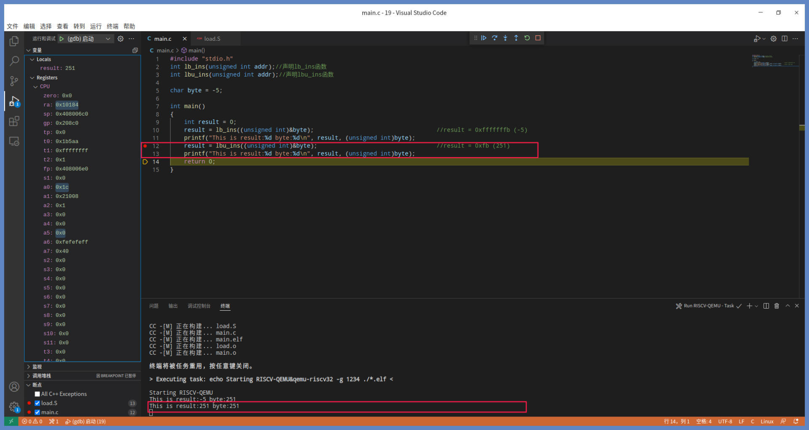

- 00 开篇词 练好基本功，优秀工程师成长第一步.md
- 01 CISC & RISC：从何而来，何至于此.md
- 02 RISC特性与发展：RISC-V凭什么成为“半导体行业的Linux”？.md
- 03 硬件语言筑基（一）：从硬件语言开启手写CPU之旅.md
- 04 硬件语言筑基（二）_ 代码是怎么生成具体电路的？.md
- 05 指令架构：RISC-V在CPU设计上到底有哪些优势？.md
- 06 手写CPU（一）：迷你CPU架构设计与取指令实现.md
- 07 手写CPU（二）：如何实现指令译码模块？.md
- 08 手写CPU（三）：如何实现指令执行模块？.md
- 09 手写CPU（四）：如何实现CPU流水线的访存阶段？.md
- 10 手写CPU（五）：CPU流水线的写回模块如何实现？.md
- 11 手写CPU（六）：如何让我们的CPU跑起来？.md
- 12 QEMU：支持RISC-V的QEMU如何构建？.md
- 13 小试牛刀：跑通RISC-V平台的Hello World程序.md
- 14 走进C语言：高级语言怎样抽象执行逻辑？.md
- 15 C与汇编：揭秘C语言编译器的“搬砖”日常.md
- 16 RISC-V指令精讲（一）：算术指令实现与调试.md
- 17 RISC-V指令精讲（二）：算术指令实现与调试.md
- 18 RISC-V指令精讲（三）：跳转指令实现与调试.md
- 19 RISC-V指令精讲（四）：跳转指令实现与调试.md
- 20 RISC-V指令精讲（五）：原子指令实现与调试.md
- 21 RISC-V指令精讲（六）：加载指令实现与调试.md
- 22 RISC-V指令精讲（七）：访存指令实现与调试.md
- 23 内存地址空间：程序中地址的三种产生方式.md
- 24 虚实结合：虚拟内存和物理内存.md
- 25 堆&栈：堆与栈的区别和应用.md
- 26 延迟分配：提高内存利用率的三种机制.md
- 27 应用内存管理：Linux的应用与内存管理.md
- 28 进程调度：应用为什么能并行执行？.md
- 29 应用间通信（一）：详解Linux进程IPC.md
- 30 应用间通信（二）：详解Linux进程IPC.md
- 31 外设通信：IO Cache与IO调度.md
- 32 IO管理：Linux如何管理多个外设？.md
- 33 lotop与lostat命令：聊聊命令背后的故事与工作原理.md
- 34 文件仓库：初识文件与文件系统.md
- 35 Linux文件系统（一）：Linux如何存放文件？.md
- 36 Linux文件系统（二）：Linux如何存放文件？.md
- 37 浏览器原理（一）：浏览器为什么要用多进程模型？.md
- 38 浏览器原理（二）：浏览器进程通信与网络渲染详解.md
- 39 源码解读：V8 执行 JS 代码的全过程.md
- 40 内功心法（一）：内核和后端通用的设计思想有哪些？.md
- 41 内功心法（二）：内核和后端通用的设计思想有哪些？.md
- 42 性能调优：性能调优工具eBPF和调优方法.md
- 先睹为快：迷你CPU项目效果演示.md
- 加餐01 云计算基础：自己动手搭建一款IAAS虚拟化平台.md
- 加餐02 学习攻略（一）：大数据&云计算，究竟怎么学？.md
- 加餐03 学习攻略（二）：大数据&云计算，究竟怎么学？.md
- 加餐04 谈谈容器云与和CaaS平台.md
- 加餐05 分布式微服务与智能SaaS.md
- 国庆策划01 知识挑战赛：检验一下学习成果吧！.md
- 国庆策划02 来自课代表的学习锦囊.md
- 国庆策划03 揭秘代码优化操作和栈保护机制.md
- 温故知新 思考题参考答案（一）.md
- 用户故事 我是怎样学习Verilog的？.md
- 结束语 心若有所向往，何惧道阻且长.md
21 RISC-V指令精讲（六）：加载指令实现与调试
你好，我是LMOS。
之前我们已经学过了RISC-V中的算术指令、逻辑指令、原子指令。这些指令主要的操作对象是寄存器，即对寄存器中的数据进行加工，这是RISC体系的重要特性。
但你是否想过寄存器中的数据从哪里来呢？答案是从内存中来，经过存储指令加载到寄存器当中。
RISC-V是一个典型的加载储存体系结构，这种体系类型的CPU，只有加载与储存指令可以访问内存，运算指令不能访问内存。这节课我们就来学习一下RISC-V的加载指令。
顾名思义，加载指令就是从一个地址指向的内存单元中，加载数据到一个寄存器中。根据加载数据大小和类型的不同，加载指令还可以细分成五条加载指令，分别是加载字节指令、无符号加载字节指令、加载半字指令、无符号加载半字指令、加载字指令。
这节课的代码，你可以从这里下载。
加载字节指令：lb指令
我们先从加载字节指令开始说起。在研究加载字节指令之前，我们先来看看RISC-V的加载指令的格式，其对应的汇编语句格式如下：
指令助记符 目标寄存器，源操作数2(源操作数1）
对于加载指令，指令助记符可以是lb、lbu、lh、lhu、lw，目标寄存器可以是任何通用寄存器，源操作数1也可以是任何通用寄存器，源操作数2则是立即数。
我们用汇编代码来描述一下加载字节指令，形式如下：
lb rd,imm(rs1)
#lb 加载字节指令
#rd 目标寄存器
#rs1 源寄存器
#imm 立即数（-2048~2047）
上述代码中rd和rs1可以是任何通用寄存器。立即数imm为12位二进制数据，其范围是-2048~2047，前面课程已经说明了，RISC-V指令集中所有的立即数都是有符号数据，这里的imm在其他的文档里也称为偏移量，为了一致性，我们继续沿用立即数的叫法。
lb指令完成的操作，用伪代码描述如下所示：
rd = 符号扩展（[rs1+imm][7:0]）
我来为你解释一下，上面的伪代码执行的操作是怎样的。
首先lb指令会从内存单元里rs1+imm这个地址里取得8位数据，也就是第0位到第7位的数据。然后，把这个数据进行符号扩展，扩展成32位数据。如果符号位为1，则该32位的高24位为1，否则为0。最后lb指令再把这个32位的数据赋给rd。
下面我们一起写代码验证一下。为了方便之后的调试，我们需要先设计好代码的组织结构，这个过程前面几节课我们反复做过，现在估计你已经相当熟练了。首先创建main.c文件并在上面写好main函数。然后写一个load.S文件，用汇编写上lb_ins函数。
lb_ins函数的代码如下所示：
.text
.globl lb_ins
#a0内存地址
#a0返回值
lb_ins:
lb a0, 0(a0) #加载a0+0地址处的字节到a0中
jr ra #返回
对照代码，我们可以看到这个函数只有两条指令，第一条指令把a0+0地址处的字节加载到a0中，第二条指令就是返回指令，a0作为函数的返回值返回。
你可以用VSCode打开工程目录，按下“F5”键调试一下。首先，我们把断点停在lb a0，0(a0) 指令处，如下所示：

上图中是刚刚执行完lb a0，0(a0)指令之后，执行jr ra指令之前的状态。
我们可以看到，a0寄存器中的值已经变成了0xfffffffb，我们继续单步调试返回到main函数中执行printf函数，打印一下lb_ins函数返回的结果，如下图所示：

如上图所示，byte变量的值为-5，其补码为0xfb，我们把byte的地址强制为无符号，整体传给lb_ins函数。
调用规范告诉我们，C语言函数用a0寄存器传递第一个参数。lb指令虽然只加载了内存地址处的8位数据（0xfb），但是它会用数据的符号位把数据扩展成32位（0xfffffffb），再传给目标寄存器，即a0寄存器，这样a0就会作为返回值返回，所以结果为0xfffffffb。这证明了lb指令工作是正常的。
无符号加载字节指令：lbu指令
接着我们来看一看lb指令的另一个版本，就是无符号加载字节指令，它的汇编代码是这样写的：
lbu rd,imm(rs1)
#lbu 无符号加载字节指令
#rd 目标寄存器
#rs1 源寄存器
#imm 立即数（-2048~2047）
上述代码里，rd，rs1，imm与lb指令的用法和规则是一样的。lbu指令完成的操作，我们用伪代码描述如下：
rd = 符号扩展（[rs1+imm][7:0]）
因为lbu指令获取8位数据的位置，还有把数据扩展成32位赋给rd的过程，都和lb指令一样，我就不重复了。注意是无符号扩展，即符号位为0。
接下来咱们写个代码验证一下，同样在load.S文件中用汇编写上lbu_ins函数 ，代码如下所示：
.globl lbu_ins
#a0内存地址
#a0返回值
lbu_ins:
lbu a0, 0(a0) #加载a0+0地址处的字节到a0中
jr ra #返回
在lbu_ins函数中，第一条指令把a0+0地址处的字节加载到a0中，之后a0会作为函数的返回值返回。
同样地，用VSCode打开工程目录，这里我们需要在lbu a0，0(a0) 指令处打下断点，随后按下“F5”进行调试，如下所示：

上图中是执行完lbu a0，0(a0)指令之后，执行jr ra指令之前的状态，现在a0寄存器中的值已经变成了0xfb。
我们继续单步调试，返回到main函数中，让printf函数打印lbu_ins函数，返回的结果如下图所示：

同样的，byte变量的值为-5，其补码为0xfb，我们把byte变量的地址强制为无符号整体传给lbu_ins函数并调用它。
在lbu_ins函数中，lbu指令只加载内存地址处的8位数据（(0xfb），但是它与lb指令不同，它会用0把数据扩展成32位（0x000000fb），再传给目标寄存器，即a0寄存器。这样a0就会作为返回值返回，故而result为0xfb（251）。这证明了lbu指令是正常工作的。lbu指令的这种无符号扩展特性，非常易于处理无符号类型的变量。
加载半字指令：lh指令
有了能够加载一个字节的指令，我们还需要加载双字节的指令，也叫加载半字指令。在RISC-V规范中，一个字是四字节，所以两个字节也称为半字。
下面我们一起来学习加载半字指令。我们还是先从汇编代码的书写形式来熟悉它，如下所示：
lh rd,imm(rs1)
#lh 加载半字指令
#rd 目标寄存器
#rs1 源寄存器
#imm 立即数（-2048~2047）
上述代码中，rd和rs1可以是任何通用寄存器。立即数imm为12位二进制数据，其范围是-2048~2047。
lh指令完成的操作，用伪代码描述如下：
rd = 符号扩展（[rs1+imm][15:0]）
经过前面的学习，相信你已经找到了规律，现在自己也能解读这样的伪代码了。还是熟悉的过程：先读取数据，找到内存单元rs1+imm这个地址，从里面获取第0位到第15位的数据，再对这个16位数据进行符号扩展（扩展为32位数据）；接着根据符号位分情况处理，如果符号位为1则该32位的高16位为1，否则为0；最后把这个32位数据赋值给rd。
下面是写代码验证时间。我们在load.S文件中用汇编写上lh_ins函数，代码如下：
.globl lh_ins
#a0内存地址
#a0返回值
lh_ins:
lh a0, 0(a0) #加载a0+0地址处的半字到a0中
jr ra #返回
上面的lh_ins函数中，第一条指令把a0+0地址处的半字加载到a0中，而a0将会作为函数的返回值返回。
我们用VSCode打开工程目录，在lh a0，0(a0) 指令处打下断点，随后按下“F5”键调试一下，如下所示：

上图中是执行完lh a0，0(a0)指令之后，执行jr ra指令之前的状态。从图中我们可以看到a0寄存器中的值已经变成了0xffffffff。
我们继续单步调试，返回到main函数中，让printf函数打印一下lh_ins函数返回的结果，如下图所示：

对照图片不难发现，short类型的half变量占用两个字节，其值为-1，它的补码为0xffff，我们把half的地址强制为无符号整体传给lh_ins函数。
在lh_ins函数中，lh指令虽然只加载内存地址处的16位数据（0xffff），但是它会用数据的符号位把数据扩展成32位（0xffffffff），再把扩展后的数据传递给a0寄存器，这样a0就会作为返回值返回，故而result为0xffffffff。这证明了lh指令工作正常。
无符号加载半字指令：lhu指令
加载半字指令也分为两种版本，即有符号版本和无符号版本。我们再看看无符号加载半字指令lhu，它的汇编代码书写形式如下所示。
lhu rd,imm(rs1)
#lhu 无符号加载半字指令
#rd 目标寄存器
#rs1 源寄存器
#imm 立即数（-2048~2047）
上述代码中rd，rs1，imm与lh指令的用法和规则是一样的。
我用伪代码为你描述一下lhu指令完成的功能。
rd = 符号扩展（[rs1+imm][15:0]）
lhu指令的操作过程与lh指令一样，我就不重复了，但符号位为0，lhu会进行无符号扩展，即数据的高16位为0。
接下来就是代码验证环节，我们同样在load.S文件中用汇编写上lhu_ins函数，代码如下所示：
.globl lhu_ins
#a0内存地址
#a0返回值
lhu_ins:
lhu a0, 0(a0) #加载a0+0地址处的半字到a0中
jr ra #返回
可以看到上面的lhu_ins函数中，第一条指令会把a0+0地址处的字节加载到a0中，而a0将会作为函数的返回值返回。
我们用VSCode打开工程目录，在lhu a0，0(a0) 指令处打下断点，随后按“F5”键调试，如下所示：

上图是执行完lhu a0，0(a0)指令之后，执行jr ra指令之前的状态，可以看到a0寄存器中的值已经变成了0xffff。
我们继续单步调试，返回到main函数中，让printf函数打印一下lhu_ins函数返回的结果，如下图所示：
如上图所示，我们把half的地址强制为无符号整体传给lhu_ins函数。在lhu_ins函数中，lh指令虽然只加载内存地址处的16位数据（0xffff），但是它会用数据的符号位把数据扩展成32位（0x0000ffff），给a0寄存器作为返回值返回，故而result为0xffff，也就是65535。这证明了lhu指令工作正常。与lbu指令一样，这里同样是为了让编译器方便处理无符号类型的变量。
加载字指令：lw指令
对于一款处理器来说，最常用的是加载其自身位宽的数据为32位的RISC-V处理器，加载字指令是非常常用且必要的指令，一个字的储存大小通常和处理器位宽相等。
现在。我们一起来学习最后一条加载指令，即加载字指令。我们先来看看加载字指令lw，它的汇编代码书写形式如下：
lw rd,imm(rs1)
#lw 加载字指令
#rd 目标寄存器
#rs1 源寄存器
#imm 立即数（-2048~2047）
lw指令完成的操作，用伪代码描述是这样的：
rd = （[rs1+imm][31:0]）
我们看看上面的伪代码执行的操作。首先找到内存单元rs1+imm这个地址，从里面获取第0位到第31位的数据，注意数据无需进行符号扩展，最后把这个32位数据赋值给rd。
写代码验证的思路，现在你应该也很熟悉了。同样还是在load.S文件中，用汇编写上lw_ins函数，代码如下所示：
.globl lw_ins
#a0内存地址
#a0返回值
lw_ins:
lw a0, 0(a0) #加载a0+0地址处的字到a0中
jr ra #返回
我们可以看到，lw_ins函数完成的操作就是，先把a0+0地址处的一个字加载到a0中，再把a0作为函数的返回值返回。
用VSCode打开工程目录，在lw a0，0(a0) 指令处打下断点，随后按下“F5”键调试，调试截图如下所示：

上图中是执行完lw a0，0(a0)指令之后，执行jr ra指令之前的状态，现在a0寄存器中的值已经变成了0xffffffff。继续单步调试执行，就可以返回到main函数中。
我们通过printf函数打印一下lw_ins函数返回的结果，如下图所示：

这里我们把word的地址强制为无符号整体传给lw_ins函数。在lw_ins函数中，lw指令会直接加载内存地址处的32位数据(0xffffffff)，给a0寄存器作为返回值返回，result值为0xffffffff，但因为它是有符号类型，故而0xffffffff表示为-1。而word为无符号整形，0xffffffff则表示为4294967295，这证明了lw指令功能是正确无误的。
到这里，我们已经完成了对lb、lbu、lh、lhu、lw这五条指令的调试，也熟悉了它们的功能细节。现在我们继续研究一下lb_ins、lbu_ins、lh_ins、lhu_ins、lw_ins函数的二进制数据。
你只需要打开终端，切换到该工程目录下，输入命令：riscv64-unknown-elf-objdump -d ./main.elf > ./main.ins，就会得到main.elf的反汇编数据文件main.ins。接着，我们打开这个文件，就会看到上述函数的二进制数据，如下所示：

上图反汇编代码中包括伪指令和两个字节的压缩指令。比如ret的机器码是0x8082，lw a0,0(a0)机器码是0x4108，它们只占用16位编码，即二字节。截图里五条加载指令的机器码与指令的对应关系，你可以参考后面这张表格。
下面我们继续一起拆分一下lb、lbu、lh、lhu、lw指令的各位段的数据，看看它们都是如何编码的。如下图所示：

对照上图可以看到，lb、lbu、lh、lhu、lw指令的功能码都不一样，我们可以借此区分这些指令。而这些加载指令的操作码都一样，立即数也相同（都是0），这和我们编写的代码有关。
需要注意的是lw a0,0(a0)指令，上图的情况和反汇编出来的数据可能不一致，这是因为编译器使用了压缩指令。
我还原了lw a0,0(a0)正常的编码，你可以手动在lw_ins函数中插入这个数据0x00052503，进行验证。怎么插入这个数据使之变成一条指令呢？代码如下所示：
.globl lw_ins
#a0内存地址
#a0返回值
lw_ins:
.word 0x00052503 #lw a0, 0(a0) #加载a0+0地址处的字到a0中
jr ra #返回
重点回顾
今天我们一共学习了五条加载指令，分别是加载字节指令、无符号加载字节指令、加载半字指令、无符号加载半字指令、加载字指令，它们可以加载不同大小的数据，同时又能处理数据的符号。
而且这五条指令组合起来，既可以加载不同位宽的数据，又能处理加载有、无符号的数据。这些指令为高级语言实现有无符号的类型变量提供了基础，让我们的开发工作更便利。比方说，在C语言中，实现的各种数据类型：unsigned、int、char、unsigned、char等都离不开加载指令。
最后我给你总结了一张导图，供你参考复习。下节课，我们继续学习储存指令，敬请期待。

思考题
为什么加载字节与加载半字指令，需要处理数据符号问题，而加载字指令却不需要呢？
欢迎你在留言区跟我交流，也推荐你把这节课分享给更多同事、朋友。
© 2019 - 2023 Liangliang Lee. Powered by Vert.x and hexo-theme-book.